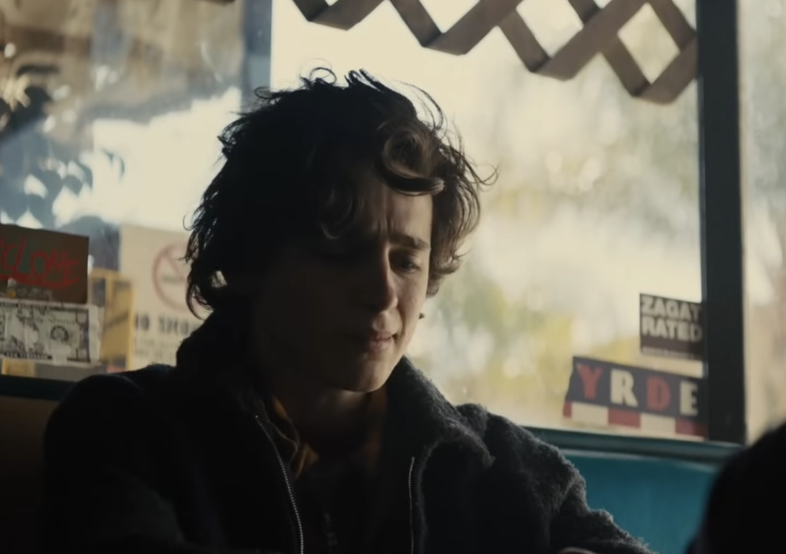
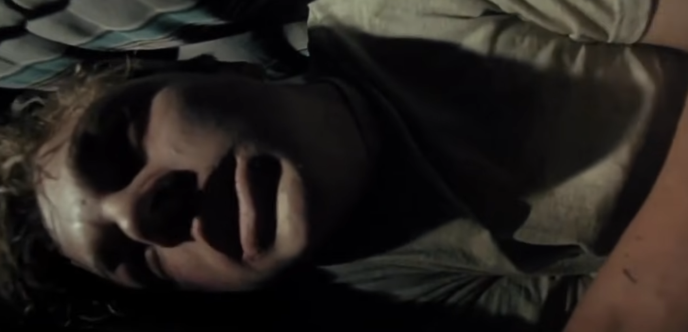
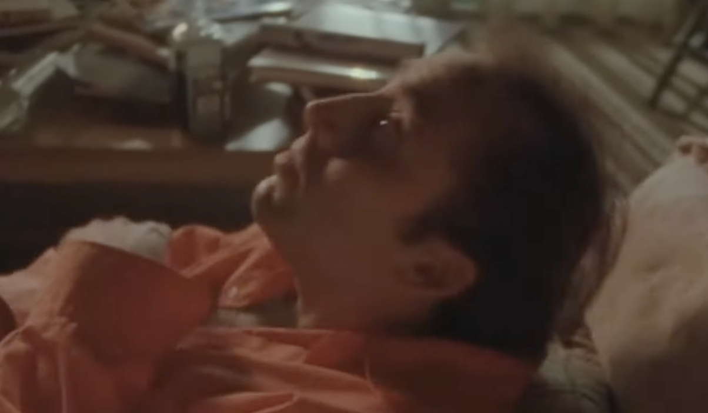

Glutamate
The gas pedal. The brain's principal excitatory neurotransmitter. It increases neuron activity and underlies learning, memory, thinking, and the formation of new connections between neurons.
The gas pedal. The brain's principal excitatory neurotransmitter. It increases neuron activity and underlies learning, memory, thinking, and the formation of new connections between neurons.
The brake. The brain's principal inhibitory neurotransmitter. It slows neuron activity and supports calmness, relaxation, sleep, anxiety reduction, and protection from overstimulation.
Says "do that again." Involved in reward, motivation, pleasure, learning, attention, movement, and reinforcement. It tags an experience as worth repeating.
Steadies mood and rhythms. Helps regulate mood, anxiety, sleep, appetite, digestion, pain sensitivity, and the felt sense of well-being.
Blocks pain and brings relief. The body's natural pain-relievers. They reduce pain, create comfort or euphoria, and are released during stress, exercise, injury, laughter, or intense emotion.

images/methamphetamine.jpg
In the Beautiful Boy clip, Timothée Chalamet (playing Nic Sheff) shows apathy, exhaustion, anger, and a complete loss of motivation. The reward, drive, and "do that again" signal are gone.
Dopamine is the neurotransmitter that produces motivation, pleasure, and the urge to repeat rewarding behavior. Seeing the exact opposite on screen points us back to dopamine as the disrupted system.
That state is the body's compensation for chronic methamphetamine use. Meth forces abnormally massive dopamine release into the synapse, and the brain protects itself by downregulating receptors and depleting reserves. When the drug is gone, no natural dopamine signal is left, and the reward system runs empty.

images/heroin.jpg
In the Basketball Diaries clip, Leonardo DiCaprio (playing Jim Carroll) is in pain, sickness, anxiety, and rage. He is the exact opposite of euphoric or comfortable.
Endorphins are the body's natural pain-relievers and source of euphoria. Seeing pain plus anxiety plus rage on screen points us back to a disrupted endorphin system.
That state is the body's compensation for chronic heroin use. Heroin binds μ-opioid receptors far more powerfully than the body's own endorphins, so the body protects itself by downregulating those receptors and cutting its own endorphin production. These receptors are not only in the brain. They run throughout the peripheral nervous system along every pain pathway, which is why heroin's effects on GABA and dopamine ride along both centrally and peripherally. Dropping pain and producing euphoria during injury, escape, or childbirth is an evolutionary survival mechanism, and heroin hijacks all of it. That is why withdrawal hurts everywhere at once, not just in the mind.

images/alcohol.jpg
In the Leaving Las Vegas clip, Nicolas Cage (playing Ben Sanderson) is in uncontrolled excitation, almost seizure-like. The brain is over-firing.
GABA is the brake and glutamate is the gas. Uncontrolled excitation means the brake has failed AND the gas is floored. That points us back to a collapse of GABA tone and a rebound of glutamate activity.
That state is the body's compensation for chronic alcohol use. Alcohol boosts GABA and blocks glutamate, so the body adapts by turning down its GABA receptors and ramping up its glutamate signaling. When the alcohol is removed, those adaptations are unmasked. The result is tremors, anxiety, hallucinations, seizures, and in severe cases delirium tremens, which can be fatal.